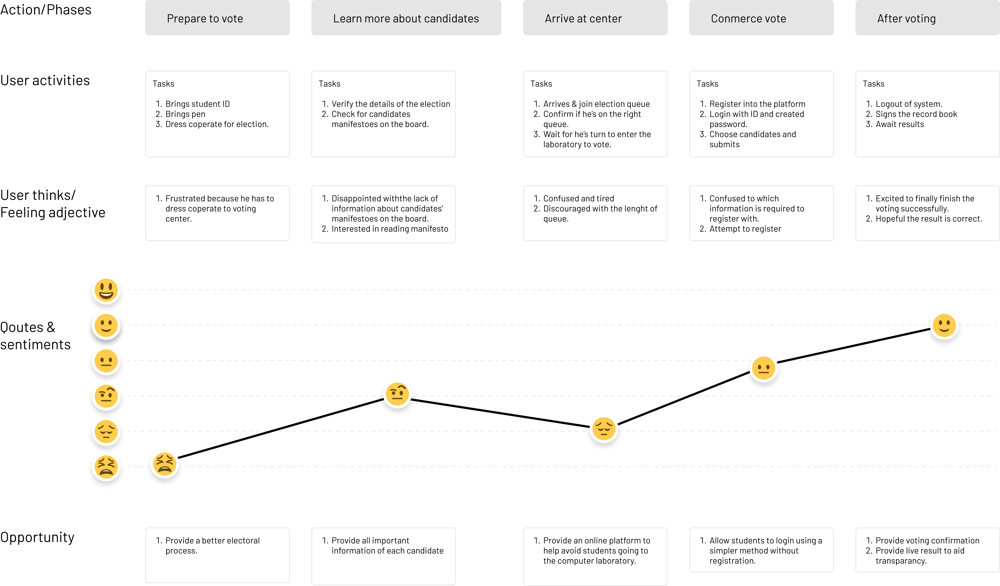

Evote is an app that provides students with faster and cheaper means of participating in various university elections and polls.
Research, wireframes, prototypes, UI Design, User flows, UI/UX Designer
Andriod & iOS
3rd April, 2022 to 21st April, 2022
Election
Project Overview
University students can participate in their university elections or polls via the Evote platform, which allows them to do so without physically visiting to the polling places. It enables students to simply cast their ballots rather than spending hours in line, keep informed, learn about the candidates by reading their manifestos, and assist them in choosing who to vote for.
Conduction interviews, surveys, paper and digital wireframe, low & high fidelity prototying, conducting usability testing, acccounting for accessibility, iterating on designs.

Figma

Google Forms

Figjam

UXtweak
Validation
In practically every college, voter turnout is low during university elections. Despite the fact that voting is sometimes required, the large crowds at the polls and the riots that take place during election season make voting an extremely frustrating chore. The fact that there is only one method to vote—by going to the voting booth, which requires a significant amount of time and effort—is one of the key reasons why the majority of students don't want to participate.
Project Vision / Goal Statement
Design a mobile app that provide an easy and accesible way for college students to vote in their universities elections. Make the registration process as seamless as possible, prioritize good usability, privacy reassurance.
Project Vision / Goal Statement
I conducted user interviews, and user survey and based on the results from the research I started by identifying key problems in the current election process and carried out a UX audit to understand the pain points and areas of improvement in the live experience of the election platform.
I learned alot about problems during thr research and found that users have similar behavoius and pain poinsts. Organizing everything helped me narrow it down to some points, from which I creaete a list of features that can help users.
Time consuming
participants need a voting app that can provide them with a platform to participate in various elections remotely without consuming time..
Transportation
The computer laboratry is located at the admin area of the university which is far from where stdents recide, student would have to book a cab and travel to the admin area to participate.
Complex registration
People need an app that is visually appealing, as it passed a sence of trust and calmness.
Accessibility
Existing platforms are not equipped with assistive technologies.
Transparency
People need an app that is transparent, where they can monitor the election results at a glance.
Designing a persona helped me to understand and empathy with the end-users and gain a perspective similar to the user, also writing the problem statment helps clearly identify the goals of the project and outline the scope of a project
I want to be able to vote remotely (online), as a student and full-time product designer, so that I don't have to spend time in the computer lab and waiting outside in the heat.
Tomiwa, a final-year student who also works full-time, requires an online voting platform because he wants the university voting procedure to be less stressful, time-consuming, and energy-intensive.
To helps understand complex user journeys, I created a user journey map to illustrate their needs, thoughts, feelings, and actions. Empathy mapping helped me identify key part in user experience design and pain point to optimize.
Created an information architecture which acts as a blueprint to map interaction patterns and paths of the product which will provide better clarity for the users and enable them complete tasks.
Task flow affects how users feel about the application. I created a clear and simplified task flow to avoid user getting frustrated while performing a task.
After collecting all the data and information from users through research and extracting essential information, I drew this user flow diagram after sevel iterations that show the entire path that the user takes when using the product. Finally, I create the most convenient navigation structure
Lo-fi Wirefrmae
By creating user flow, it helps us deliver a great product experince. I made a number of wireframes to layout the app content and functionality on a page which takes into account user needs and user journeys.
Test Phase
I conducted a round of usability testing to test and determine the usability of the product. The goal is to understand if the design is usable and intuitive enough for students to accomplish their goals on the product. I used the wireframe prototype to conduct the test with 3 potential users and recieved a number of feedbacks.
Users want to login to the appp quickly.
Users want more login options.
Users want to be able to make withdrawals.
Users were unfamilair and confused with the “port number” term.
Users want a better navigation menu.
Users expressed their sucureity concerns towards their the use of their apple and google authenticantion.
Design Iteration
Takeaway
Early designs had the term “Next” when a user is about submitting the election which didn’t portry the action to be perform, I changed the “Next” to “Submit” to better clerify the action to be performed.
Takeaway
The usability testing revealed frustration with selectin of candidate. To address the issue, I refactored the vote buttons display the choosed candidate as active and the others inactive.
Takeaway
Early designs had didn’t make provision for users to make use biometrics as a means of signing in to the application, so I added the fingerprint button to aid uses make faster and easier login to the application.
Final Design
Bringing the app design to live by converting the wireframe to visual designs, I created a sytleguide (which contains the illustrations, typography, colors, and library components) which was used to make to design visually appealing to users.
Final Design
By creating prototype, it helps me & stakeholders test and visualize how the appilication will come out and to pass down to the engineering team to experience the design interaction and for development.